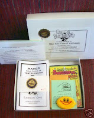

Really?
7/17/2010
{kind=link}

Question: Do you really learn from this Maher Course, or is it better to have hands on with personal training ?
* * * * *
Answer: Personal training would be my first choice, of course, but where will you find a ventriloquist who is offering personal training? Even the majority of pro ventriloquists learned from a book or a Course of some sort, at least initially. Once you know what to do (that's what the Course teaches), mastering the skill is a matter of dedicated practice, (and that, only you can provide). Yes. you can really learn from the Maher Course . (Don't put off your purchase too long. I'm selling from my final reserve inventory.)
* * * * *
Answer: Personal training would be my first choice, of course, but where will you find a ventriloquist who is offering personal training? Even the majority of pro ventriloquists learned from a book or a Course of some sort, at least initially. Once you know what to do (that's what the Course teaches), mastering the skill is a matter of dedicated practice, (and that, only you can provide). Yes. you can really learn from the Maher Course . (Don't put off your purchase too long. I'm selling from my final reserve inventory.)